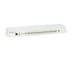

产品中心 » 时钟系列

GPSDO N系列/E系列
GPSDO N系列/E系列
GPS锁定参考振荡器USRP N200 / N210系列(rev2、3、4及以上)和USRP E100 / E110(rev4及以上)系列。工具包包括1电力电缆、3串行电缆,3射频电缆和2螺丝要求安装在USRP N200 /高达系列底盘。应用程序要求使用一个活跃的GPS天线,这个模块需要一个3 v LNA兼容的GPS天线(不提供)
查看产品的细节»
询问报价


Octo Clock-G
OCTOCLOCK8通道时钟分配模块W /综合GPSDO
OctoClock-G是OctoClock，它包括一个内部的GPS disciplned，过控制晶体振荡器的升级版本。像OctoClock，所述OctoClock-G提供了8 PPS和10兆赫的输出。
查看产品的细节»
询问报价

Octo Clock
OCTOCLOCK8通道时钟分配模块
该OctoClock是高精度的时间频率基准分配一个负担得起的解决方案。所述OctoClock接受来自外部源10兆赫和PPS信号，并分发给各信号8的方法。这对于想建立被同步到公共定时源的多通道系统的用户的有用的附件。
需要外部10兆赫/1 PPS源。
需要外部10兆赫/1 PPS源。
查看产品的细节»
询问报价